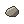

#472 天蠍王Gliscor

- 地區
- 城都
- 分類
- 一般
- 特性
- 怪力鉗、沙隱
- 身高／體重
- 2 公尺／42.5 公斤
- 性別
- ♀ 50% · ♂ 50%
- 捕獲率
- 30
- 基礎經驗值
- 179
- 成長速度
- 較慢
「只要能好好抓住再微弱的風，牠就能一次都不拍翅膀而環繞地球一圈。」
能力
| 能力 | 種族值 | Lv 100 | Lv 150 | |
|---|---|---|---|---|
| HP | 75 | 780-873 | 1155-1293 | |
| 攻擊 | 95 | 195-226 | 290-336 | |
| 防禦 | 125 | 255-286 | 380-426 | |
| 特攻 | 45 | 95-126 | 140-186 | |
| 特防 | 75 | 155-186 | 230-276 | |
| 速度 | 95 | 195-226 | 290-336 | |
| 合計 | 510 |
Lv 欄是個體值 0–31 的能力範圍（沒有努力值，性格補正為中性）。遊戲內 HP 會再乘以 3，避免即時戰鬥太快結束。升到 Lv 100 所需經驗值合計： 1,059,860，Lv 150： 4,394,235。
進化
 天蠍
天蠍出現地點與機率
升級招式
招式光碟（對應招式學習器）
官方招式學習器對應列表：
| 招式 | 屬性 | 分類 | 威力 | 光碟 |
|---|---|---|---|---|
| 燕返 | 物理 | 60 |  飛行・少見 飛行・少見 | |
| 迷人 | 一般 | 變化 | - |  一般・少見 一般・少見 |
| 劈瓦 | 格鬥 | 物理 | 75 |  格鬥・稀有 格鬥・稀有 |
| 誘惑 | 一般 | 變化 | - | 一般・少見 |
| 居合斬 | 一般 | 物理 | 50 | 一般・少見 |
| 惡之波動 | 惡 | 特殊 | 80 |  惡・稀有 惡・稀有 |
| 清除濃霧 | 變化 | - | 飛行・少見 | |
| 挖洞 | 地面 | 物理 | 60 |  地面・少見 地面・少見 |
| 影子分身 | 一般 | 變化 | - | 一般・少見 |
| 地震 | 地面 | 物理 | 100 | 地面・極稀有 |
| 挺住 | 一般 | 變化 | - | 一般・少見 |
| 硬撐 | 一般 | 物理 | 70 | 一般・稀有 |
| 點到為止 | 一般 | 物理 | 40 | 一般・少見 |
| 投擲 | 惡 | 特殊 | 60 | 惡・少見 |
| 遷怒 | 一般 | 物理 | 60 | 一般・少見 |
| 終極衝擊 | 一般 | 物理 | 150 | 一般・超稀有 |
| 覺醒力量 | 一般 | 物理 | 60 | 一般・少見 |
| 破壞光線 | 一般 | 物理 | 150 | 一般・超稀有 |
| 鐵尾 | 鋼 | 物理 | 100 |  鋼・極稀有 鋼・極稀有 |
| 自然之恩 | 一般 | 物理 | 60 | 一般・少見 |
| 以牙還牙 | 惡 | 特殊 | 50 | 惡・少見 |
| 毒擊 | 毒 | 物理 | 80 |  毒・稀有 毒・稀有 |
| 守住 | 一般 | 變化 | - | 一般・少見 |
| 求雨 | 水 | 變化 | - |  水面・少見 水面・少見 |
| 睡覺 | 超能力 | 變化 | - |  精神強念・少見 精神強念・少見 |
| 報恩 | 一般 | 物理 | 60 | 一般・少見 |
| 岩石打磨 | 岩石 | 變化 | - | 岩石・少見 |
| 岩崩 | 岩石 | 物理 | 75 | 岩石・稀有 |
| 碎岩 | 格鬥 | 物理 | 20 | 格鬥・少見 |
| 岩石封鎖 | 岩石 | 物理 | 50 | 岩石・少見 |
| 羽棲 | 變化 | - | 飛行・少見 | |
| 沙暴 | 岩石 | 變化 | - | 岩石・少見 |
| 秘密之力 | 一般 | 物理 | 70 | 一般・稀有 |
| 夢話 | 一般 | 變化 | - | 一般・少見 |
| 污泥炸彈 | 毒 | 物理 | 90 | 毒・稀有 |
| 隱形岩 | 岩石 | 變化 | - | 岩石・少見 |
| 鋼翼 | 鋼 | 物理 | 70 | 鋼・稀有 |
| 尖石攻擊 | 岩石 | 物理 | 100 | 岩石・極稀有 |
| 怪力 | 一般 | 物理 | 80 | 一般・稀有 |
| 替身 | 一般 | 變化 | - | 一般・少見 |
| 大晴天 | 火 | 變化 | - |  火・少見 火・少見 |
| 虛張聲勢 | 一般 | 變化 | - | 一般・少見 |
| 劍舞 | 一般 | 變化 | - | 一般・少見 |
| 挑釁 | 惡 | 變化 | - | 惡・少見 |
| 小偷 | 惡 | 特殊 | 40 | 惡・少見 |
| 無理取鬧 | 惡 | 變化 | - | 惡・少見 |
| 劇毒 | 毒 | 變化 | - | 毒・少見 |
| 急速折返 | 蟲 | 物理 | 70 |  蟲・稀有 蟲・稀有 |
| 十字剪 | 蟲 | 物理 | 80 | 蟲・稀有 |
同屬性招式（Ground/Flying），不在官方列表中：
| 招式 | 屬性 | 分類 | 威力 | 光碟 |
|---|---|---|---|---|
| 空氣利刃 | 物理 | 55 | 飛行・少見 | |
| 空氣斬 | 物理 | 75 | 飛行・稀有 | |
| 彈跳 | 物理 | 85 | 飛行・稀有 | |
| 勇鳥猛攻 | 物理 | 120 | 飛行・超稀有 | |
| 喋喋不休 | 物理 | 65 | 飛行・稀有 | |
| 啄鑽 | 物理 | 80 | 飛行・稀有 | |
| 羽毛舞 | 變化 | - | 飛行・少見 | |
| 飛翔 | 物理 | 70 | 飛行・稀有 | |
| 起風 | 物理 | 40 | 飛行・少見 | |
| 鸚鵡學舌 | 變化 | - | 飛行・少見 | |
| 啄 | 物理 | 35 | 飛行・少見 | |
| 啄食 | 物理 | 60 | 飛行・少見 | |
| 神鳥猛擊 | 物理 | 140 | 飛行・超稀有 | |
| 翅膀攻擊 | 物理 | 60 | 飛行・少見 | |
| 骨棒 | 地面 | 物理 | 65 | 地面・稀有 |
| 骨棒亂打 | 地面 | 物理 | 25 | 地面・少見 |
| 骨頭回力鏢 | 地面 | 物理 | 50 | 地面・少見 |
| 大地之力 | 地面 | 物理 | 90 | 地面・稀有 |
| 地裂 | 地面 | 物理 | 60 | 地面・少見 |
| 震級 | 地面 | 物理 | 60 | 地面・少見 |
| 泥巴炸彈 | 地面 | 物理 | 65 | 地面・稀有 |
| 泥巴射擊 | 地面 | 物理 | 55 | 地面・少見 |
| 玩泥巴 | 地面 | 變化 | - | 地面・少見 |
| 擲泥 | 地面 | 物理 | 20 | 地面・少見 |
| 流沙地獄 | 地面 | 物理 | 15 | 地面・少見 |
| 撒菱 | 地面 | 變化 | - | 地面・少見 |
上表所有升級招式，以及所有一般屬性光碟都可以學習；招牌招式、傳說招式與鎖定招式除外（參見 招式光碟）。光碟只會由野生寶可夢掉落。
打倒後掉落
| 道具 | 稀有度 | 機率 | 數量 |
|---|---|---|---|
 岩石碎片 | 常見 | 10% | 1 |
 粗寶石 粗寶石 | 稀有 | 1% | 1 |
| 地面屬性招式光碟 | 少見 | 0.5% | 1 |
| 地面屬性招式光碟 | 稀有 | 0.15% | 1 |
| 地面屬性招式光碟 | 極稀有 | 0.03% | 1 |
| 飛行屬性招式光碟 | 少見 | 0.5% | 1 |
| 飛行屬性招式光碟 | 稀有 | 0.15% | 1 |
| 飛行屬性招式光碟 | 極稀有 | 0.03% | 1 |
| 飛行屬性招式光碟 | 超稀有 | 0.006% | 1 |
另外還有依野生寶可夢等級發放的通用掉落（藥品、球等）： 等級掉落表。實際機率會隨等級差、稀有狀態與每日上限改變。
異色
異色機率 1/1024 ，每次野生寶可夢出現時判定（共 10 種配色）。異色寶可夢每一項個體值至少為 20，且全部能力 +5%。